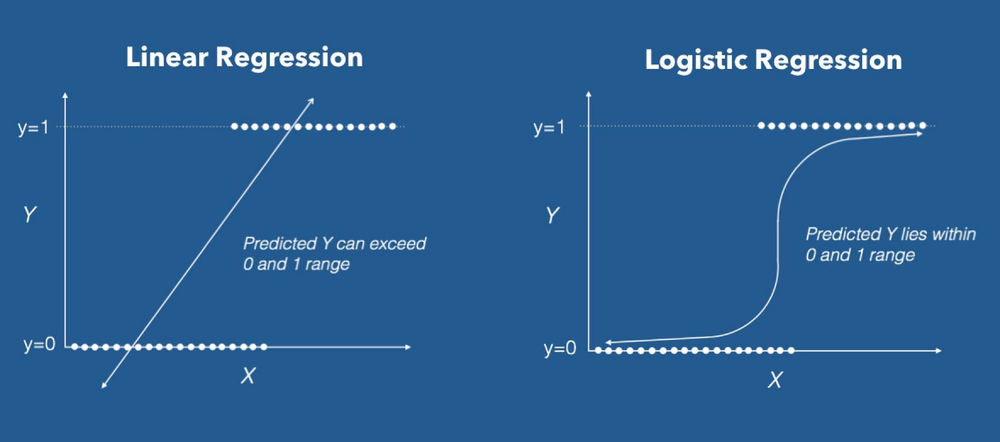

Introduction to Machine Learning (2)
Data-Based Economics
Classification Problems
Classification problem
- Binary Classification
- Goal is to make a prediction \(c_n = f(x_{1,1}, ... x_{k,n})\) …
- …where \(c_i\) is a binary variable (\(\in\{0,1\}\))
- … and \((x_{i,n})_k\), \(k\) different features to predict \(c_n\)
- Multicategory Classification
- The variable to predict takes values in a non ordered set with \(p\) different values
Logistic regression
- Given a regression model (a linear predictor) \[ a_0 + a_1 x_1 + a_2 x_2 + \cdots a_n x_n \]
- one can build a classification model: \[ f(x_1, ..., x_n) = \sigma( a_0 + a_1 x_1 + a_2 x_2 + \cdots a_n x_n )\] where \(\sigma(x)=\frac{1}{1+\exp(-x)}\) is the logistic function a.k.a. sigmoid
- The loss function to minimize is: \[L() = \sum_n (c_n - \sigma( a_{0} + a_1 x_{1,n} + a_2 x_{2,n} + \cdots a_k x_{k,n} ) )^2\]
- This works for any regression model (LASSO, RIDGE, nonlinear…)

Logistic regression
- The linear model predicts an intensity/score (not a category) \[ f(x_1, ..., x_n) = \sigma( \underbrace{a_0 + a_1 x_1 + a_2 x_2 + \cdots a_n x_n }_{\text{score}})\]
- To make a prediction: round to 0 or 1.

Multinomial regression
- If there are \(P\) categories to predict:
- build a linear predictor \(f_p\) for each category \(p\)
- linear predictor is also called score
- To predict:
- evaluate the score of all categories
- choose the one with highest score
- To train the model:
- train separately all scores (works for any predictor, not just linear)
- … there are more subtle approaches (not here)
Other Classifiers
Common classification algorithms
There are many:
- Logistic Regression
- Naive Bayes Classifier
- Nearest Distance
- neural networks (replace score in sigmoid by n.n.)
- Decision Trees
- Support Vector Machines
Nearest distance
- Idea:
- in order to predict category \(c\) corresponding to \(x\) find the closest point \(x_0\) in the training set
- Assign to \(x\) the same category as \(x_0\)
- But this would be very susceptible to noise
- Amended idea: \(k-nearest\) neighbours
- look for the \(k\) points closest to \(x\)
- label \(x\) with the same category as the majority of them
- Remark: this algorithm uses Euclidean distance. This is why it is important to normalize the dataset.

Decision Tree / Random Forests
- Decision Tree
- recursively find simple criteria to subdivide dataset
- Problems:
- Greedy: algorithm does not simplify branches
- easily overfits
- Extension : random tree forest
- uses several (randomly generated) trees to generate a prediction
- solves the overfitting problem
Support Vector Classification
- Separates data by one line (hyperplane).
-
Chooses the largest margin according to
support vectors - Can use a nonlinear kernel.


All these algorithms are super easy to use!
Examples:
- Decision Tree
from sklearn.tree import DecisionTreeClassifier
clf = DecisionTreeClassifier(random_state=0). . .
- Support Vector
from sklearn.svm import SVC
clf = SVC(random_state=0). . .
- Ridge Regression
from sklearn.linear_model import Ridge
clf = Ridge(random_state=0)Validation
Validity of a classification algorithm
Independently of how the classification is made, its validity can be assessed with a similar procedure as in the regression.
Separate training set and test set
- do not touch test set at all during the training
Compute score: number of correctly identified categories
- note that this is not the same as the loss function minimized by the training
Classification matrix
- For binary classification, we focus on the classification matrix or confusion matrix.
| Predicted | (0) Actual | (1) Actual |
|---|---|---|
| 0 | true negatives (TN) | false negatives (FN) |
| 1 | false positives (FP) | true positives (TP) |
. . .
We can then define different measures:
- Sensitivity aka True Positive Rate (TPR): \(\frac{TP}{FP+TP}\)
- False Positive Rate (FPR): \(\frac{FP}{TN+FP}\)
- Overall accuracy: \(\frac{\text{TN}+\text{TP}}{\text{total}}\)
. . .
Which one to favour depends on the use case
Example: London Police
According to London Police the cameras in London have
- True Positive Identification rate of over 80% at a fixed number of False Positive Alerts.29 nov. 2022
. . .
Interpretation? Is failure rate too high?
Example
Based on consumer data, an algorithm tries to predict the credit score from.
Can you calculate: FPR, TPR and overall accuracy?
Confusion matrix with sklearn
- Predict on the test set:
y_pred = model.predict(x_test)- Compute confusion matrix:
from sklearn.metrics import confusion_matrix
cm = confusion_matrix(y_test, y_pred)